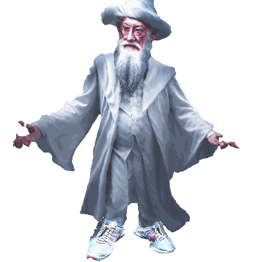
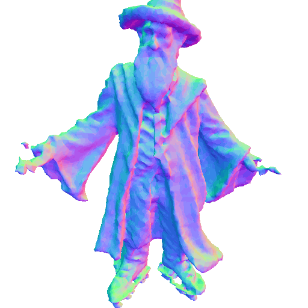
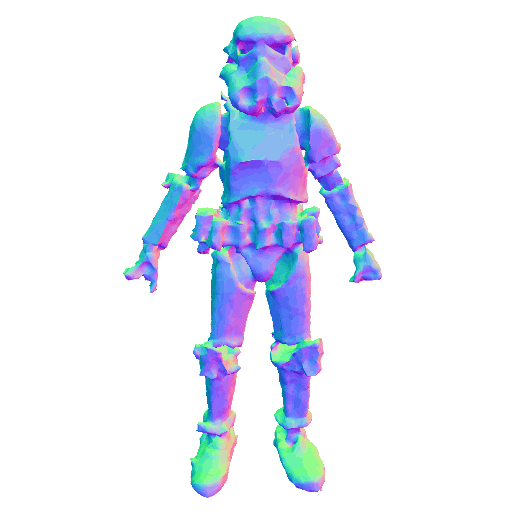

Method Overview
Editing Gallery
|
Hulk
|
Hulk holding a can of coke
|
|
|
Hulk holding a red apple
|
Hulk with a cowboy hat |
|
Hulk wearing pink mini skirt |
Hulk holding a shoe |
|
A DSLR photo of Albus Dumbledore |
A DSLR photo of barefoot Albus Dumbledore |
|
A DSLR photo of Albus Dumbledore |
 A DSLR photo of Albus Dumbledore wearing Nike shoes |
A DSLR photo of Albus Dumbledore with a clown face |
A DSLR photo of Albus Dumbledore wearing a pair of sandals |
 A DSLR photo of Albus Dumbledore wearing a pair of roller skates |
A DSLR photo of Albus Dumbledore wearing a pair of football boots |
A DSLR photo of Albus Dumbledore wearing a pair of golden boots |
 A DSLR photo of Albus Dumbledore holding a long magic wand |
 Stormtrooper |
Stormtrooper standing on wooden skateboards |
Video Presentation
BibTeX
@inproceedings{xu2024gg,
title={GG-Editor: Locally Editing 3D Avatars with Multimodal Large Language Model Guidance},
author={Xu, Yunqiu and Zhu, Linchao and Yang, Yi},
booktitle={Proceedings of the 32nd ACM International Conference on Multimedia},
pages = {10910–10919},
year={2024}
}